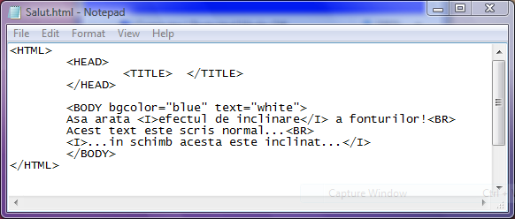
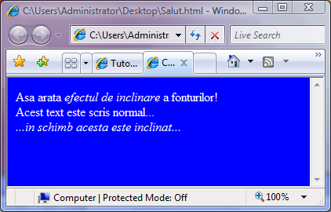

Fonturi inclinate
Evidentierea fonturilor prin scriere inclinata (cursiv sau italic) se realizeaza
cu ajutorul etichetelor I (italic) si respectiv /I. Tot textul dintre cele doua etichete
va fi afisat cu fonturi inclinate spre dreapta.... Iata un exemplu de utilizare a scrierii
cu fonturi inclinate:


Inapoi la Formatare fonturi